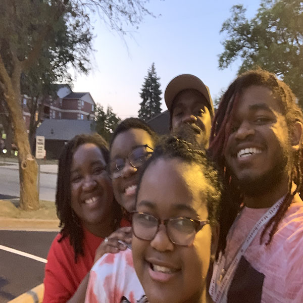

Where Gaming Meets Family

Mom
My mom who is the furthest to the left in the picture is a 7th grade English teacher in Urbana and she is the kindest person in the world, but I am biased so maybe she isn't the kind-est. She is a great teacher, but she also possesses mad cooking skills and can do all kinds of different hair styles for people. What I love most about my relationship with my mom is that we share a love for reading and that makes it fun to not only read the same books with her, but to also have very in-depth conversations about them. We are also both planning to write a book. One other thing that my mom is very good at is working with computers and she loves doing that kind of stuff as well. While she doesn't program or anything like that, she can pretty much fix a laptop herself.
Dad
My dad who is in the back of the photo works at a company called Jeld-Wen which makes windows for houses and cars. He is the most hardworking person I know as he goes to work and then after work sometimes he still ends up woring on someone else's car, our own vehicles, or doing something else. My dad can fix a good number of things and I want to become as good at that as he is someday. While I get my love of reading from my mom, I get my love of math and my looks from my dad. What I love most about my dad is how much he would do for our family. One time he picked me up at like 3 in the morning just because I wanted to spend the weekend with them, but I had other things I had to do before I went home. He is the best Dad I could ever ask for.
Caleb
Caleb who is not in the photo is my older brother by about 4 years. He is probably the most athletic one in the family, but he is also really good in school. He has played Hockey before, baseball, football, basketball, and ran track. You couldn't tell by looking at him, but he is a really fast runner. Additionally, he is a very comedic person and I for one think he would make a pretty good stand-up comedian. Although I have grown out of wanting to do everything that my brother does, I still look up to him and he is someone I admire tons. The things that he and I do together include playing first-person shooter games like Call of Duty. We haven't played together in a while, but I would definitely love to play again.
Me
Then there is me. I actually love sports as well, but my real passion falls into the academic setting. Contrary to most attitudes towards school, I found it very entertaining and enjoyed every second of it. Being able to learn different things and seeing things from different perspectives is something I happen to enjoy. Besides school, the other thing that I think is a ton of fun is creating different things and spending time with different people. When I was younger I was introverted, but now I can't get enough of spending time with different people and I talk a ton. While that is true, I still find myself spending the majority of my free time with my family because we are that tight-knit.
Jonathan
Then there is my younger brother Jonathan who I am probably the closest with. When we are together we are usually laughing. He loves school as well, but he really likes art class the most. Unlike me and our older brother, he doesn't play sports. He did baseball for a few years, but it wasn't really his cup of tea. We tend to like a lot of the same things and will play tons of games together. Another thing that he likes to do is watch wrestling and although I find it annoying, I like to watch it a little bit as well. He has always been the most extroverted in the family and is loved by everyone. He is always making cards for people and is one of the sweetest in the family.
Victoria
Then there is my sister who is the youngest in the family. She hasn't found the one thing that she really likes yet, but she does have an assortment of things that she likes to do. She usually plays with me and Jonathan and will make us laugh. Just like me and Jonathan, sometimes she can act crazy, but it is especially when we are playing our wrestling game where we have different people and we give them different personalities. She is another one that loves making cards and notes for her teachers and loves to help people. She gets her hardworking nature from our dad. I am very protective of her and as she is the youngest she is the most spoiled. We will do just about anything for her.